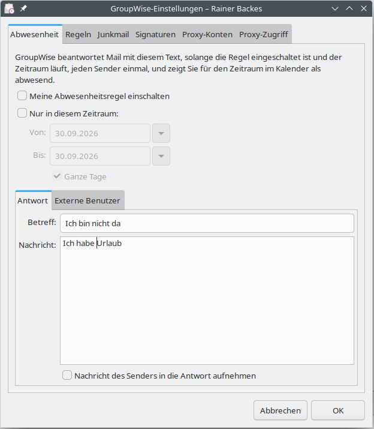
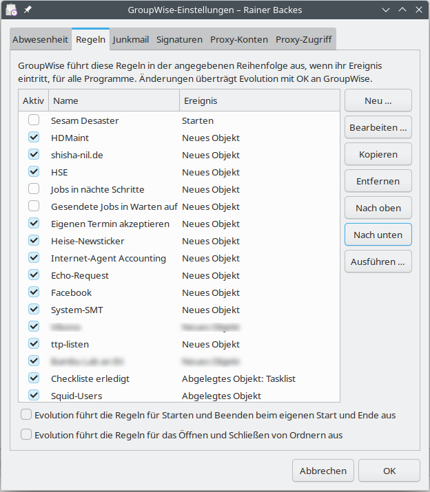
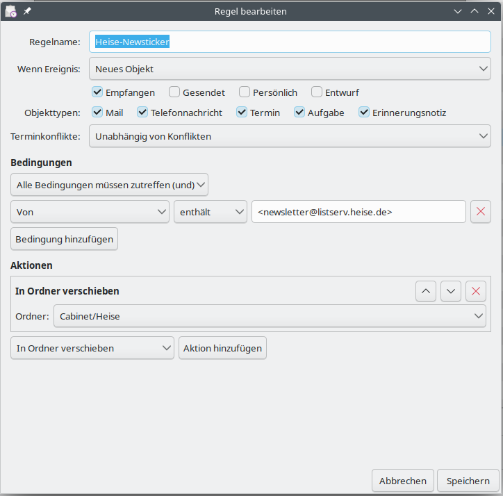
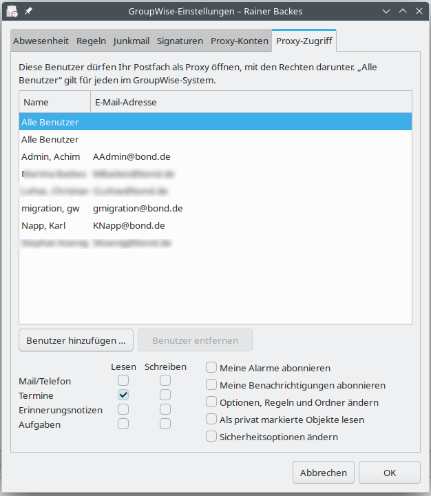
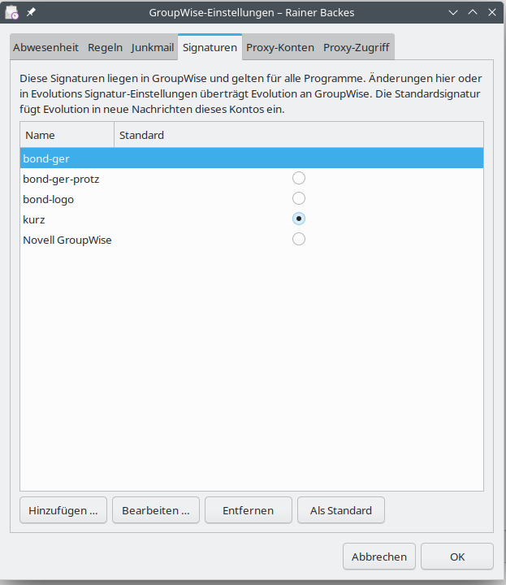
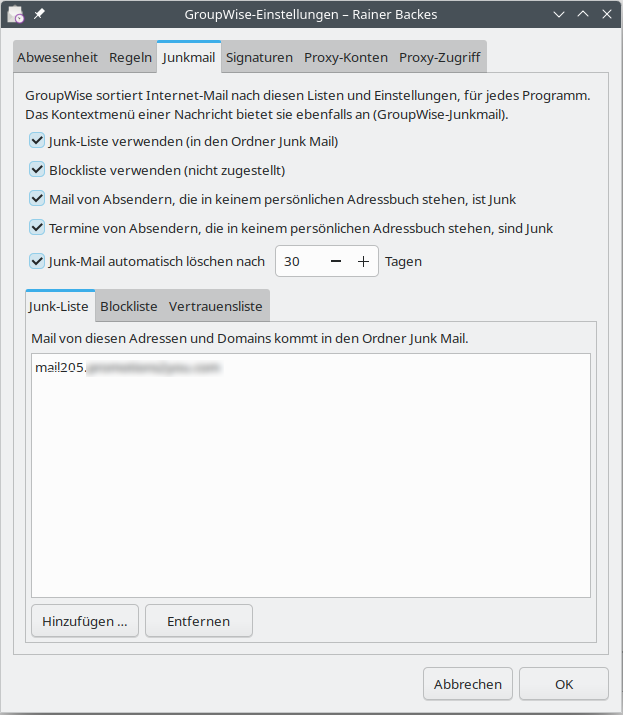
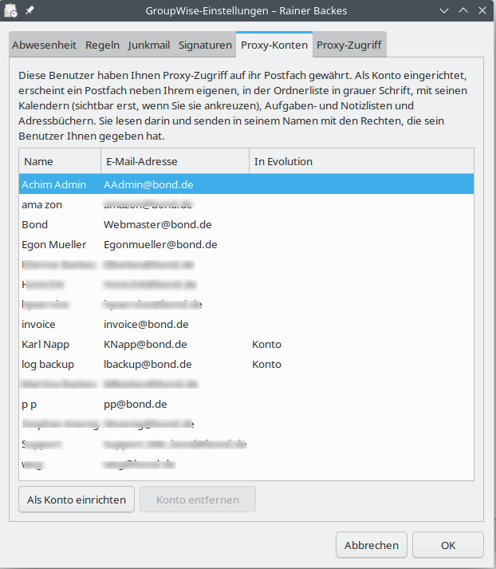

evolution-groupwise integrates GroupWise mailboxes directly into the mail and groupware program Evolution. It talks to the GroupWise Post Office Agent (POA) over its SOAP interface — the same path GroupWise Web uses. No additional service and no detour through IMAP is needed.
A single login gives you:
Evolution and the GroupWise client sometimes name the same thing differently. The table lines up the names; the English names are also the ones used in the GroupWise Client User Guide, which this manual cites throughout chapter 10.
| Evolution | GroupWise Client | What it is |
|---|---|---|
| Appointment | Personal Appointment | An entry only in your own calendar, with no attendees |
| Meeting | Meeting | An appointment with attendees that is sent as an invitation |
| All Day Appointment; in the editor the option | the option when creating an appointment, personal or with attendees | An appointment with no time, spanning whole days. GroupWise shows an all-day event as “free” by default, so other appointments on that day are possible without a conflict (a three-day trade fair and the appointments at the fair). Evolution otherwise makes every appointment “busy”; in a GroupWise calendar, a new all-day appointment starts out free from the beginning, just as in the GroupWise client. Change this with in the editor; it arrives in GroupWise as “free” or “busy” and the other way round too. |
| Task | Personal Task | A task only for yourself |
| Assigned Task | Task | A task that is sent to others |
| Memo | Personal Reminder | A note on a given day, only for yourself |
| Shared Memo | Reminder | A note on a given day that is sent to others |
| – | Sticky Note | A personal note with no date; Evolution has no equivalent for it |
| Mail Message | A message | |
| Phone Message | Phone Message, “While You Were Out” and the personal phone message | A message with extra fields for the caller, company, phone number and checkboxes (telephoned, please call, urgent …). Evolution shows a received one as a message; the fields appear as their own paragraph above the message text. You write one with (4.2). |
| Tasks (the view) | Tasklist | The list of open tasks; the GroupWise Tasklist additionally contains messages you have flagged for follow-up |
| Organizer | From | Who schedules a meeting |
| Attendees | Recipients: To, Copy (CC), Blind Copy (BC) | Who is invited; Evolution instead distinguishes required and optional attendees |
| Label (for mail), Category (in the calendar) | Category | Color-coded marking |
| Search Folder | Find Results Folder | A folder that shows the result of a saved search |
This manual uses Evolution’s names; where it helps clarity, the GroupWise name is given alongside.
| Component | Requirement |
|---|---|
| Evolution and evolution-data-server | 3.52 or newer (e.g. openSUSE Leap 16, openSUSE Tumbleweed, Ubuntu 24.04, a current Fedora). The “Restore” function in the Trash needs Evolution 3.56. |
| GroupWise | Post Office Agent with an active SOAP interface (default port 7191); developed and tested with GroupWise 26.2. |
| Credentials | A GroupWise user ID and password. |
RPM packages are available for openSUSE and Fedora, a .deb package for Debian and Ubuntu. Install the package with your system’s package manager, for example on openSUSE:
sudo zypper install ./evolution-groupwise-0.11.3-0.x86_64.rpm \
./evolution-groupwise-lang-0.11.3-0.noarch.rpm
or on Debian/Ubuntu:
sudo apt install ./evolution-groupwise_0.11.3_amd64.deb
The package evolution-groupwise-lang contains the German translation (for now; more
languages may follow). Afterwards, restart Evolution and the background services, most easily by logging
out and back in, or with:
evolution --force-shutdown
For developers and for testing, the module can be built with CMake and installed into the home directory without administrator rights. The commands for that are in the file README.md of the sources. Such a developer install must be removed again before installing a package, or Evolution loads every module twice.
There is no page for outgoing mail: messages are sent through GroupWise itself. The account then appears in the mail view, and its address books, calendars, task lists and memo lists appear under the account’s heading in their respective views.
GroupWise usually issues the certificates of its agents with its own, internal certificate authority (CA), which Linux does not trust at first. Evolution therefore asks, the first time it connects, just like the GroupWise client, whether it should trust the POA’s certificate. Check the details shown and choose ; the acceptance applies to the whole account with its calendars and address books. If the POA’s certificate is renewed later, Evolution asks once more — again just like the GroupWise client.
The certificate must be issued for the name under which you address the POA (for example mail.example.com); otherwise Evolution rejects the connection as insecure despite your acceptance.
sudo update-ca-certificates, oropenssl s_client -connect mail.example.com:9710 -showcerts </dev/null 2>/dev/null \
| awk '/BEGIN CERT/{n++} n==2{print} /END CERT/ && n==2{exit}' > groupwise-ca.pem
openssl x509 -in groupwise-ca.pem -noout -subject -fingerprint -sha256
Under you will find:
| Option | Meaning |
|---|---|
| Ask the server every … seconds for changes in the mailbox | GroupWise notes, on request, what happens in the mailbox: new, read, moved and deleted messages. With this option, Evolution polls that list at the set interval (default 60 seconds, minimum 15) and only synchronizes the affected folders. New messages and anything you do in the GroupWise client or on a mobile device then appear within this interval instead of only at the next full account fetch; the request itself is small. This saves time especially for proxy accounts. The usual fetch continues as well. The option also applies to the account’s calendars, tasks and memos: appointments you create, change or delete in the GroupWise client or on a mobile device, and incoming invitations, appear just as quickly instead of only at the next calendar sync (every 15 minutes) — as long as Evolution is running. Off unless you turn it on; turning it off again makes Evolution remove the markers from the mailbox. Your proxy accounts (section 4.8) take over this setting from your own account, including the interval: you only set it there. |
| The server reports changes at once, on port … of this computer | In addition to the request above: GroupWise reports to Evolution by itself as soon as something happens in the mailbox; new messages then appear after one or two seconds. For this, the GroupWise server (POA) opens a connection to your computer, on the given TCP port (default 5221). This only works if the server can reach your computer — on a company network, not behind a home router — and if your computer’s firewall lets the port through. If Evolution finds that the reports are not arriving, it asks whether it should open the port in the firewall (, , ); the system asks for the administrator password for that. Without incoming reports, the interval of the request above simply applies. After turning on or changing either option, it takes a few minutes before the server also reports messages from outside and actions in the GroupWise client at once. Only selectable together with the request; off unless you turn it on. Your proxy accounts take over this setting as well. |
| Apply filters and junk checking to new messages in the mailbox | Evolution’s own filter rules and junk detection run over newly arrived messages. For this, Evolution downloads every new message in full; the option is therefore off unless you need it. |
| Copy folder content locally for offline operation | Messages are downloaded ahead of time so they can be read without a connection. |
| Read-only: never change anything on the server | Evolution only reads. Read status, moving, deleting and sending are not sent to the server — useful for trying things out. |
| Run the rules for startup and exit when Evolution starts and quits | See section “Rules”: Evolution lets GroupWise run the rules with the Startup and Exit event. Off unless you turn it on. |
| Run the rules for opening and closing folders | Likewise for the Folder Open and Folder Close events. |
sudo rm -f /etc/machine-id /var/lib/dbus/machine-id sudo systemd-machine-id-setupOther parts of the system use the machine ID too; it is best to set it anew right after cloning, before you even set up Evolution.
Settings that the GroupWise server itself keeps for your mailbox are edited in the GroupWise Settings window: right-click the name of the GroupWise account in the folder list and choose . The window reads the settings from the server when it opens and writes your changes back with ; they then apply to every program, including the GroupWise client and GroupWise Web. It has the tabs Out of Office, Rules (see below), Junk Mail (see section 4.5), Signatures (see section 4.2), Proxy Accounts (see section 4.8), Proxy Access and Mailbox and Password (both see below). In the GroupWise client you find the same settings under the Tools menu.
For a proxy account (section 4.8), shows the Out of Office and junk mail settings of the other mailbox. This requires that the other user has given you the proxy right “Modify options, rules and folders”; otherwise the window reports this. The “Proxy Accounts” and “Proxy Access” tabs do not appear there.
The Out of Office tab corresponds to the out-of-office rule of the GroupWise client:

The Rules tab corresponds to Tools → Rules in the GroupWise client. GroupWise runs the rules itself, for every program, in the order of the list.

The Rule Editor does not have quite the scope of the GroupWise client, but is noticeably easier to use and should be enough for everyday use:

Rules with parts the editor cannot display (nested condition groups, document or X-fields, other actions such as Archive) are shown only; you can still turn them on and off, move, run and remove them. Edit them in the GroupWise client.
The events Startup, Exit, Folder Open and Folder Close are triggered by the client in GroupWise, not the server. The two checkboxes below the list (also in the account options) decide whether Evolution takes this over: at Evolution’s start and exit, and on opening and leaving a folder respectively. Both are off at first – keep in mind that such rules can, for instance, delete messages permanently.
The Proxy Access tab corresponds to proxy access in the security options of the GroupWise client: it determines who may open your mailbox as a proxy, and with what rights.

With , Evolution sends the changes to GroupWise.
The Mailbox and Password tab of the GroupWise settings shows the mailbox in figures, like Tools → Check Mailbox Size in the GroupWise client:
The figures are the state when the window was opened. For a proxy account, they describe the other mailbox.
opens the Change the Password of the Mailbox dialog: old password, new password and its repetition, then . GroupWise changes the password at once – independent of or of the settings window. Evolution remembers the new password in the keyring, also for your proxy accounts; other programs and devices that use the mailbox (GroupWise Web, mobile devices) need it as well. The button only appears for your own account.
Evolution shows all folders of the GroupWise mailbox, like the GroupWise client, system folders first in its order – Mailbox, Sent Items, Tasklist, Work In Progress (Drafts), Junk Mail, Trash, Cabinet with all its subfolders –, then your own folders and the search result folders, by name. The system folders carry the names the GroupWise client also shows in your language. Set an order yourself in Evolution (context menu of a folder, ), and that one applies. Folders shared by other users whose parent folder no longer exists are hidden, like in the GroupWise client. Folders can be created, renamed, moved and deleted. System folders such as the Mailbox or the Trash stay as they are.
Evolution checks for new messages regularly. Between two full syncs (at most every 15 minutes), it only asks for the changes since the last time.
Messages are sent through GroupWise: internal recipients get a native GroupWise message, external ones an ordinary e-mail. The sent message then lies in Sent Items.
As in the GroupWise client, for sent messages you can see what happened to them at the recipients, and retract them. Both are in the Sent Items folder of a GroupWise account, in a message’s context menu and in the menu:
Check in the editor, and Evolution asks GroupWise for the “When Opened” return notification as mail (in the GroupWise client: Send Options → Notify → When Opened: Mail Receipt). As soon as a recipient in the GroupWise system opens the message, GroupWise puts a message “Name opened Subject” into your Mailbox – without the recipient doing anything; they are not asked. For recipients on the Internet, GroupWise requests an ordinary read receipt, which their mail program decides on.
For this to apply to every message, turn on “Always request a read receipt” under . Independent of that, in Sent Items shows at any time who has had a message delivered, opened or deleted.
A phone message records, for someone, who called while they were away. Choose or the same entry in the dropdown of the button in the toolbar – in any view, as in the GroupWise client. The Phone Message dialog:
sends it through GroupWise. A phone message has no subject of its own: as in the GroupWise client, the caller and the phone number stand in for it. Recipients see it in the GroupWise client as a phone message and in Evolution as a message with the call details above the text; for you, it lies in Sent Items. At least one recipient and either the caller or a text are required.
Your signatures from GroupWise are available in Evolution: in the field of the message editor, and under , with images. Evolution inserts GroupWise’s default signature into new messages of the account, even if GroupWise is set to ask before sending; in the editor, choose another one or “None”. The signatures of a proxy account carry the account’s name, e.g. “Karl – Karl Napp (Proxy)”.
Edit signatures in the GroupWise Settings window, Signatures tab:

Changes and deletions under are also sent to GroupWise by Evolution. New signatures you create there with , however, stay in Evolution only, because they are not tied to an account. Changes made in the GroupWise client are taken over by Evolution the next time the account connects. Removing a whole account leaves its signatures in GroupWise untouched.
Deleted messages move into the GroupWise Trash, as in the GroupWise client.
GroupWise categories appear in Evolution as labels. GroupWise’s four predefined categories correspond to Evolution’s standard labels:
| GroupWise | Evolution |
|---|---|
| Urgent | Important |
| Personal | Personal |
| Follow-up | To Do |
| Low priority | Later |
What Evolution calls “Follow Up” is not a message of its own, but a marker for follow-up on an existing message, optionally with a due date. The message list shows it with a flag, completed ones with a check mark. This is exactly GroupWise’s Tasklist, and Evolution synchronizes both ways:
Flags you had already set in Evolution before version 0.8.0 are carried over to the Tasklist at the first sync.
GroupWise sorts unwanted Internet mail itself: by a junk list (mail goes into the “Junk Mail” folder), a block list (mail is not delivered at all) and a trust list (mail is never junk; it takes precedence). Entries are e-mail addresses or Internet domains. The lists do not apply to internal mail from the GroupWise system.
As in the GroupWise client, you can also specifically classify an address or a whole domain: a message’s context menu has, right below Evolution’s own entries, the submenu with
A dialog asks each time whether only the address or the whole domain (with its subdomains) is entered. In the folders of a proxy account (4.8), the submenu acts on the lists of the other mailbox; this needs the proxy right “Modify options, rules and folders”.
Below that is (elsewhere in Evolution only in the menu): a dialog lets you choose the destination address book; completing the entry lets you add further details. With the setting “Mail from senders who are not in any personal address book is junk”, a sender in one of your personal GroupWise address books counts as wanted.
The settings and lists themselves are edited in the GroupWise Settings window, opened from the context menu of the GroupWise account in the folder list (). On the Junk Mail tab, you can

With , the changes are sent to GroupWise and then apply to every program, including the GroupWise client. GroupWise creates the “Junk Mail” folder as soon as junk mail management is turned on.
Evolution shows GroupWise search result folders (for example “All Mails”) as folders. Deleting and moving act on the folder a message actually lies in; nothing can be moved into a search result folder itself. These folders are synced at most every 15 minutes and are not copied for offline operation.
Folder structure and message list stay visible even without a connection, as do messages already opened. With the account option “Copy folder content locally for offline operation”, or the folder property of the same name, Evolution downloads messages ahead of time. Changes made offline (read, labels) are sent at the next connection.
If another user has given you proxy rights to their mailbox in the GroupWise client, you can open it in Evolution as a proxy account next to your own account. The GroupWise client switches its whole window to the other mailbox for this; in Evolution, both mailboxes are in the folder list at the same time. The name and folders of a proxy account appear in gray text. The calendars (with subcalendars), task and memo lists, and personal address books of the other user belong to the proxy account too; they appear in their respective views under the proxy account’s heading.
To set up a proxy account:

A proxy account is called “Name (Proxy)” and is a standalone account: you can rename, disable or remove it under – with its calendars and address books – without touching your own account. It logs in to the other mailbox as a proxy with your own password; when setting it up, Evolution also stores your password for the proxy account in the keyring. If you change your GroupWise password, Evolution asks for it once for the proxy account. The account comes with a sending identity carrying the other user’s name and address:
You do not need a proxy account to send: all users and resources who have given you proxy rights are offered in the field of your own account when writing a message, as in the GroupWise client. Choose the sender you want there; the message then goes out through a proxy login from their mailbox and afterwards lies in their Sent Items. This requires the proxy right to write mail; otherwise Evolution reports, when sending, that the right is missing.
If you only need the calendar of another user, a proxy calendar under your own account is enough, without a proxy account (see section 5.1). For users for whom you have set up a proxy account, their calendars are only available at the proxy account.
You can share one of your own folders with other GroupWise users: it then also appears in their folder list, with the rights you grant. Unlike proxy access (4.8), which opens the whole mailbox, a share affects only this one folder – optionally with its subfolders.
As in the GroupWise client, sharing is a tab of the folder properties. Choose in the folder’s context menu (right above ; it opens the properties straight to this tab) or and there the tab. The tab exists for folders you created yourself, and for folders others have shared with you; system folders such as the Mailbox do not have it. It appears a moment after the dialog, once the server has answered.
Evolution’s properties dialog only has , no “Cancel”. Sharing therefore has a button of its own: sends what you have set to the server; the list then shows the new state. If new users are involved, Evolution first asks for the subject and message of the Shared Folder Notification these users receive; there sends nothing. If you close the properties with changes not yet applied, Evolution asks whether it should or them.
Proxy accounts: the folders of a proxy account (4.8) can be shared the same way, as far as your proxy rights in that mailbox reach – important, for instance, for resources that are only managed through proxy access. The notification then comes from the proxy account’s mailbox.
The recipient accepts the share (see below); if you withdraw the folder from them again, it disappears from their folder list.
Icons in the folder list: the GroupWise client puts a small user icon on the folder – green on the left for folders you have shared, blue on the right for shares accepted from others. Evolution uses two icons of its own instead:
| Folder | Icon in Evolution |
|---|---|
| shared by you with others | a folder with the sharing sign (three connected dots) on the front |
| shared with you by others | a folder with a network plug underneath |
The icon changes as soon as you apply or withdraw a share.
You can hand a shared mail folder over entirely to a participant, for example when responsibility changes. Select a user with the status “Accepted” in the share list and click . The dialog asks for the and of the request the user receives; sends it off. In the share list, the user then shows the status “Ownership offered”.
Taking over ownership: if someone offers you ownership of a folder they have shared with you, you get a notification in the Mailbox. Open it like a share (see below): instead of the dialog for accepting, Evolution then asks whether you want to take over the folder; makes you the owner. The folder is then your own and no longer shared.
If another user shares a folder with you, you get the message Shared Folder Notification: … in the Mailbox. Double-clicking the message opens – like opening it in the GroupWise client – the dialog Install Shared Folder; so does the entry in the menu (it only appears for such messages). Read the text of the notification in the preview, or via . The dialog shows who shares which folder, the sender’s message and your access rights, and asks:
accepts the share: the folder appears in the folder list, and the notification disappears from the Mailbox. You do not have to decline a share – if you do not accept it, just leave the message or delete it. This also works in a proxy account, for example to accept a share for a resource.
For a folder another user has shared with you, the tab shows the owner and your rights; nothing can be changed there.
Your rights in such a folder: you may always read. Without the Add right, nothing can be moved or copied into the folder; without the Delete right, its messages can neither be deleted nor moved into another folder (copying works). Evolution tells you which right is missing; a message marked for deletion reappears at the next sync. If the owner changes your rights, the new ones apply after the next read of the folder list.
Messages in such a folder are read like any other. GroupWise-internal messages, however, are not handed out whole by the server there; Evolution assembles them from text, HTML version and attachments. GroupWise messages embedded in such a message are then missing.
The calendar view lists, under the account’s name, in this order:
In a proxy calendar, you can do as much as the other user has allowed you as a proxy for appointments: with the write right, you create, change and delete appointments there; otherwise the calendar is read-only. In a shared calendar, what the owner has allowed you applies (see 5.8). Neither has reminders. Subscribed Internet calendars that GroupWise itself fetches are not shown – Evolution can subscribe to such calendars directly if needed.
Evolution syncs the calendars with the server every 15 minutes, so changes from the GroupWise client appear by themselves. It is faster with the account option “Ask the server every … seconds for changes in the mailbox” (chapter 3, Account Options): then they appear within the set interval, with the server’s instant report after a few seconds. Only the calendar where something changed is synced; all calendars of the mailbox only when the server names none (for replies to invitations and completed tasks). You can change the interval in the properties of a calendar.
Right-click a calendar of your GroupWise account in the calendar list and choose . The dialog offers, under , every user and resource who has given you proxy rights and whose calendar is not yet set up. With and , you decide how the calendar appears in the list; the suggested name is the user’s name with the suffix “(Proxy)”, for example “Jane Doe (Proxy)”; sets it up.
GroupWise itself sends and answers meetings. Evolution does not send invitation e-mails of its own for these calendars.
Move an appointment between the main calendar and your subcalendars in two ways:
The appointment stays the same GroupWise appointment; it is moved on the server, not created anew. A meeting is neither retracted nor resent by this. Copying () instead creates a new, independent appointment.
The GroupWise categories of an appointment appear in Evolution as categories of the appointment, with the same names as the labels for mail (so the predefined ones as Important, Personal, To Do, Later). In the appointment editor, show the categories field with . A category GroupWise does not yet know is created there. For meetings, categories belong to your own copy; they do not trigger a new send.
Unlike in the GroupWise client, categories do not color appointments in Evolution – the color always comes from the calendar.
Via in a calendar’s context menu, you change color and name, as well as the sync interval. The color from GroupWise is only taken over when first created; your changes in Evolution are kept. The order of the calendars (main calendar, subcalendars, proxy calendars, shared calendars) is decided by the module the first time they are created.
This applies to your own subcalendars and to calendars others have shared with you. The main calendar, the task and memo list, and proxy calendars added in the GroupWise client can neither be renamed nor deleted (a name you give there is reset at the next sync); for proxy calendars added in Evolution see 5.1; in proxy accounts, you still create calendars in the GroupWise client. GroupWise does not support further task or memo lists. The account must be connected.
As in the GroupWise client, an appointment can have preparation or travel time before and after it. GroupWise occupies these times with appointments of its own, “Before: Subject” and “After: Subject”, and Evolution shows them the same way – as busy time right before and after the appointment.
Setting it: the appointment editor of a GroupWise calendar has the tab with the red car – the icon the GroupWise client also uses for travel time. There you enter hours and minutes, separately for and ; the minutes step by 5 with the arrows. If is checked, the time after takes over the time before. On save, GroupWise creates the “Before:” and “After:” appointments or adjusts them. Set a time to 0, and the matching appointment disappears again – as in the GroupWise client. For a new meeting, Evolution sets the travel time on your own copy as soon as it is available at the next sync – right after sending; the “Before:” and “After:” appointments therefore appear a moment later.
A subcalendar you created yourself can be shared with other GroupWise users, like a mail folder (4.9). The main calendar Calendar itself cannot be shared – proxy access exists for that.
Choose in the calendar’s context menu. The dialog Sharing of “…” opens, with the same elements as the tab of a mail folder: Not shared / Shared with, the name field with the address book button, the share list with status and access, the additional rights Add, Edit and Delete, as well as the button. New users get the Shared Calendar Notification, whose subject and message you can adjust before sending. The entry appears for your own subcalendars and for calendars others have shared with you (there, the dialog only shows the owner and your rights), also in proxy accounts.
The message Shared Calendar Notification: … arrives in the Mailbox. Double-clicking it (or ) opens the dialog Install Shared Calendar with the sender, their message, your rights, as well as name and description under which the calendar should appear for you, and the Color it gets in Evolution and in the GroupWise client (changeable later in Evolution via the calendar’s properties). There is no position to choose here: the calendar joins your other calendars. After , it appears in the calendar view after a few seconds, with the owner’s name in parentheses.
| Right | What you can do with it |
|---|---|
| Read (always) | See the appointments. |
| Add | Enter new appointments, also by copying or moving from another calendar. |
| Edit | Change existing appointments. |
| Delete | Delete appointments. |
If a right is missing, Evolution refuses the change with a message naming the missing right. If you only have the read right, the calendar is read-only. If the owner changes your rights, this applies in Evolution after the calendar next connects (at the latest after a restart).
Only appointments without attendees belong in a shared calendar; create a meeting in your own calendar. Categories, reminders, and preparation and travel time are personal and are not stored for appointments of other calendars.
Tasks and memos of the GroupWise calendar appear in Evolution in the account’s task list Tasks and memo list Memos.
The contacts view lists, under the account’s name:
The address books are kept locally so that autocompletion while writing is fast and works offline. It is turned on for the GroupWise address books; you can change this in an address book’s properties.
As with calendars (5.6): or in the context menu creates a personal address book in GroupWise with the Type of your GroupWise account; renames it there, and deletes it, after a confirmation, with all its contacts. An address book another user has shared with you can likewise be renamed (only for yourself) and deleted (it then only leaves your mailbox). The GroupWise address book and “Frequent Contacts” can neither be renamed nor deleted.
Share a personal address book via in its context menu. The dialog Sharing of “…” corresponds to that of calendars (5.8) and the tab of mail folders (4.9), with two particularities of the server:
New users get the Shared Address Book Notification. If you withdraw the share, the address book disappears for the recipient; the server sends them the original notification once more as an ordinary message (same subject, sender in the form “user.postoffice.domain”) – it no longer offers anything and can be deleted. The GroupWise address book and “Frequent Contacts” cannot be shared.
Double-clicking the message Shared Address Book Notification: … in the Mailbox (or ) opens the dialog Install Shared Address Book with the sender, their message, your rights, as well as name and description. Preset is the address book’s name with the owner in parentheses. After , the address book appears in the contacts view after a few seconds. An address book shared as read-only is read-only in Evolution.
| Topic | State |
|---|---|
| Other users’ calendars | Proxy calendars under your own account, the calendars of a proxy account, and shared calendars are writable according to the rights granted. Proxy calendars added in Evolution are known to Evolution only. Only appointments without attendees belong in a shared calendar. |
| Sharing | Mail folders (4.9), calendars (5.8) and address books (chapter 7) can be shared, and shares from others accepted. For address books, the server only knows Read or Read and Edit, and a user’s right cannot be changed afterwards. If you transfer ownership of a mail folder (4.9), unlike in the GroupWise client you do not stay a participant. |
| Replying with a different sender | If you reply with a mailbox for which you are a proxy, as sender (4.8), GroupWise does not link the reply to the original (4.2). |
| Proxy accounts | New messages are determined, at every sync, from the whole folder list, because the POA does not answer a change query in proxy sessions. With the account option “Ask the server every … seconds for changes in the mailbox”, they still appear at once. |
| Cloned computers | Two computers with the same machine ID interfere with each other when polling for changes on the same mailbox (see Account Options in chapter 3). |
| Signed or encrypted messages | cannot be sent through GroupWise; received ones are shown. |
| Search result folders | show only part of the hits over SOAP (see 4.6). |
| Recurring appointments | appear as a series with their rule and can be changed and deleted for one, all, or the following appointments (5.2). Adding appointments and changing the rule to other days is not possible. Very old series without a rule appear as single appointments. |
| Subscribed Internet calendars | are left out. |
| Dragging onto the calendar list | not reliable in Evolution; use the context menu or the editor. |
| Restoring from the Trash | only from Evolution 3.56 on. |
evolution --force-shutdown).Start Evolution from a terminal with diagnostic output to see more closely what is happening:
G_MESSAGES_DEBUG=evolution-groupwise evolution 2>&1 | tee /tmp/evolution.log
The calendar and address book services run in the background; their output goes to the system journal:
systemctl --user set-environment G_MESSAGES_DEBUG=evolution-groupwise evolution --force-shutdown journalctl --user -f | grep evolution-calen
The command-line tool gw-cli (in the package under
/usr/lib64/evolution-groupwise/ or /usr/lib/…) talks
directly to the POA and helps with troubleshooting:
export GW_HOST=mail.company.com GW_USER=user # password is asked for gw-cli login # login and user data gw-cli folders # folder list, with the role of the calendars gw-cli items FOLDER-ID 20
This overview sets the functions of the GroupWise Client for Windows against those of Evolution with evolution-groupwise. It follows the structure of the GroupWise Client User Guide (GroupWise 26, April 2026) and reflects the state of version 0.11.3; it is kept up to date with every version.
| Area in the GroupWise Client | In Evolution |
|---|---|
| Folder list and system folders; creating, renaming, moving, deleting folders | yes, in the client’s order (4.1) |
| Reading, writing, replying to, forwarding mail; attachments, drafts | yes; recipients get a genuine GroupWise message, replies are linked to the original (4.2) |
| Sending and receiving phone messages | yes (4.2) |
| Sent items: delivery status, retracting, resending | yes (4.2) |
| Signatures | yes, synced with GroupWise |
| Categories; follow-up flag and Tasklist | yes, as labels and categories respectively (4.4) |
| Junk mail: lists, blocking, trusting, settings | yes (4.5) |
| Trash: restoring, emptying | yes (4.3) |
| Search result folders | shown, with part of the hits; created in the client (4.6) |
| Recurring appointments: shown as a series; this message, all messages, from this one forward changing and deleting | yes, for series with a rule (5.2); Evolution additionally marks recurring appointments with an icon |
| Appointments and meetings: scheduling, accepting, declining, changing, canceling; Internet invitations | yes (5.3) |
| Free/busy search, alarms, time zones, resources, preparation and travel time | yes (5.7) |
| Personal calendars (subcalendars), colors, moving appointments between calendars | yes, also creating, renaming and deleting (5.1, 5.6) |
| Tasks (including assigned ones) and reminder notes | yes (chapter 6) |
| GroupWise address book, frequent contacts, personal address books; name completion and address selection | yes, also creating, renaming and deleting (chapter 7) |
| Rules including out of office; running rules manually | yes; nested rules in particular are shown only (chapter 3) |
| Checking mailbox size; changing the password | yes, “Mailbox and Password” tab (chapter 3); deleting or archiving by size does not exist there |
| Proxy: granting rights, working as a proxy in another mailbox | yes, as proxy accounts (4.8) |
| Shared folders, calendars and address books: sharing and accepting | yes (4.9, 5.8, chapter 7) |
| Caching mode | corresponds to Evolution’s offline operation (4.7) |
| Notify: notification of new messages | Evolution itself; on request, the server reports changes at once (chapter 3, Account Options) |
| Printing, POP3 and IMAP accounts, RSS, LDAP address book, subscribing to Internet calendars | Evolution’s own functions, independent of GroupWise |
| Saving a message as a file | Evolution: (mbox format), or drag the message into a file manager folder |
| Function of the GroupWise Client | State |
|---|---|
| Custom recurrence by individual dates | missing; Evolution creates series by a rule (daily, weekly, monthly, yearly), with exceptions. |
| Changing a series’ rule, adding appointments to a series | not possible; delete the appointments no longer wanted and create a new series (5.2). |
| Delegating invitations, proposing a new time | missing; a delegated invitation is shown as a status. |
| Send options for mail | Priority is transferred, and “Request Read Receipt” requests the notification on opening as mail (4.2). Notification on deletion, delayed delivery, expiration date, “reply requested”, classification and a hidden subject are missing; the status of a sent message is shown by . |
| Searching the whole mailbox on the server (full text) | Evolution searches what it knows locally: the message lists and messages already loaded. |
| Adding and writing to proxy calendars | yes (5.1), writable according to the rights granted. A proxy calendar added in Evolution stays in Evolution and does not appear in the GroupWise client. |
| Archive | GroupWise’s archive has its own, undisclosed format and can only be read with the GroupWise client. |
| Scheduling meetings with Teams, Zoom or WebEx | missing. |
| S/MIME: sending signed or encrypted | missing; received messages are shown. |
| Choosing the sender (“From”): mailboxes you are a proxy for (users and resources) | present: in the “From” field of your own account, see section 4.8. |
| Alternative (secondary) sender addresses of a mailbox | missing. |
| Marking messages private; categories on contacts | missing. |
| Transferring ownership of a shared folder | yes, for mail folders (4.9); the previous owner does not stay a participant. |
| Posting into a shared folder (Posted Item) | missing. |
| Receiving another user’s alarms and notifications | The right can be granted; Evolution does not use it. |
| Multi-user calendar | no dedicated column view; several calendars can instead be overlaid. |
| Internet calendars subscribed to in GroupWise | left out; Evolution can subscribe to such calendars itself. |
| Subtasks in the Tasklist | missing. |
Functions tightly bound to the Windows client, or rarely used: routing slips, polls, mentions, quick reply, sticky notes, mail merge, document management and Filr attachments, the home page with panels, remote mode, newsgroups, SMS, Messenger, and repairing and backing up the mailbox.